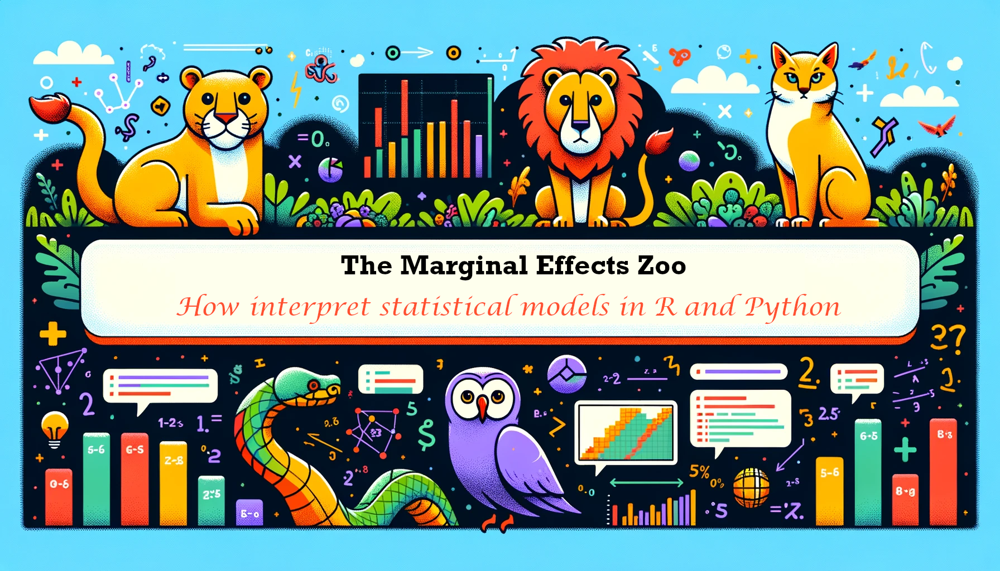

Interpreting statistical models with marginaleffects for R and Python
Parameter estimates are often hard to interpret substantively, especially when they are generated by complex models with non-linear components, interactions, or transformations. Instead of reporting unintuitive parameters, data analysts would rather focus on simple quantities of interest, which have straightforward scientific interpretations. Unfortunately, meaningful estimands—and their standard errors—are often tedious to compute, and the terminology used to describe them varies tremendously across fields.
These problems are compounded by the fact that modeling packages produce objects with very different structures and which hold different information. This means that end-users often have to write customized code to interpret the output of Linear, GLM, GAM, Bayesian, Mixed Effects, and other model types. This can lead to wasted effort, confusion, and mistakes, and it can hinder the implementation of best practices.
This online book introduces a conceptual framework and software tools to facilitate the interpretation of a vast range of statistical models in R and Python. The marginaleffects package supports over 100 classes of statistical models, including linear, GLM, GAM, mixed-effects, bayesian, categorical outcomes, and more. With a single unified interface, users can compute and plot many quantities of interest, including:
- Predictions (aka fitted values or adjusted predictions)
- Comparisons such as risk differences, risk ratios, odds, etc.
- Slopes (aka marginal effects)
- Marginal means
- Linear and non-linear hypothesis tests
- Equivalence tests
- Uncertainty estimates using the delta method, bootstrapping, simulation, or conformal inference.
The Marginal Effects Zoo is a free online book with over 30 chapters full of tutorials, case studies, and technical notes. It covers a wide range of topics, including how the marginaleffects package can facilitate the interpreation of analysis of:
- Experiments
- Machine learning models
- Causal inference with G-Computation
- Bayesian modeling
- Multilevel regression with post-stratification (MRP)
- Missing data imputation
- Matching
- Inverse probability weighting
- Conformal prediction
Do you like this project?
If you like this project, you can contribute in 3 main ways:
- Cite the
marginaleffectspackage in your work and tell your friends about it. - Submit bug reports, documentation improvements, or code contributions to the Github repositories of the
RorPythonversions of the package:- https://github.com/vincentarelbundock/marginaleffects
- https://github.com/vincentarelbundock/pymarginaleffects
- Make a donation to The Native Women’s Shelter of Montreal and send me (Vincent) a quick note. You’ll make my day.
Development